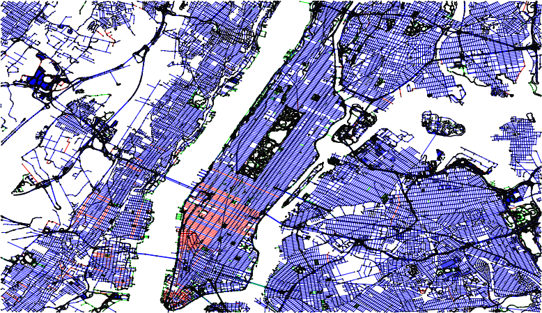
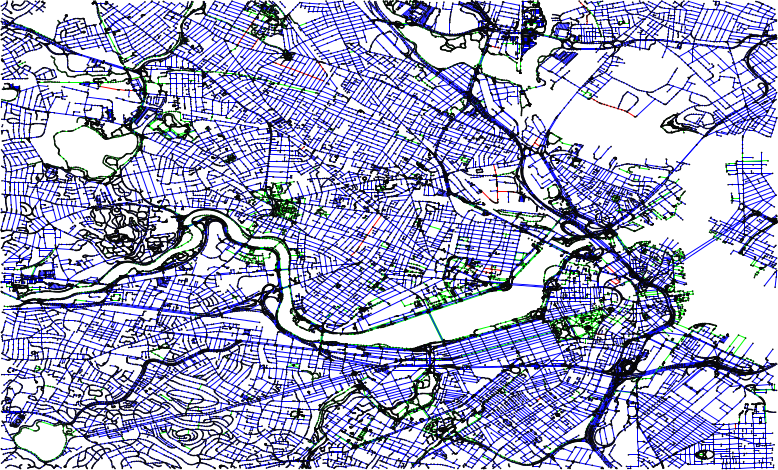
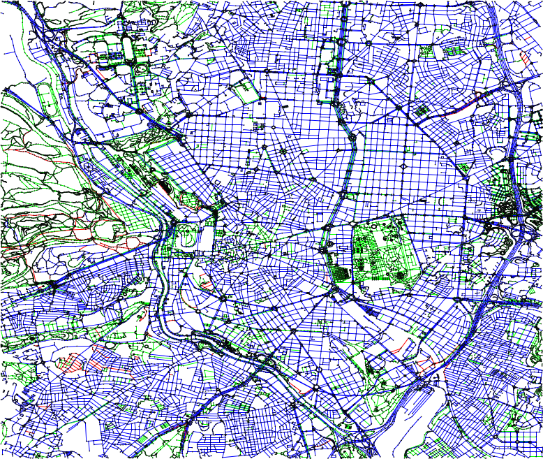

View the Project on GitHub ignacioarnaldo/OpenStreetMap2Graph
The goal of the project is to provide maps of real cities in a graph representation (with nodes and edges). Nodes are intersections between roads, points where roads change direction, or subway stations. We create an edge between two nodes whenever there is a road or railway that links them. If we zoom in Washington Square, NYC, this is what it looks like:
The resulting graphs are big! For instance, the graph representation of NYC counts 98542 nodes and 114981 edges. For simplicity, we consider railways and roads separately.
| City | Mapzen - OpenStreetMap | Snapshot of the roads | Donwload PDF | Donwload gexf file |
| New York City |  | Roads PDF Railways PDF |
Roads GEXF Railways GEXF |
|
| Boston |  | Roads PDF Railways PDF |
Roads GEXF Railways GEXF |
|
| Madrid |  | Roads PDF Railways PDF |
Roads GEXF Railways GEXF |
Download the geoJSON data of one of the cities available at mapzen.com
Six arguments need to be specified:
path_to_map: path to the geojson file
road_class: highway or railway
minX: minimum x coordinate of the rectangle delimiting the city
maxX: maximum x coordinate of the rectangle delimiting the city
minY: minimum y coordinate of the rectangle delimiting the city
maxY: maximum y coordinate of the rectangle delimiting the city
From the terminal:
$ java -jar graphFromGeoJson.jar path_to_map road_class minX maxX minY maxY > output.gexf
$ java -jar ParseJsonMaps.jar new-york_new-york-roads.geojson railway -74.0969467163086 -73.8339614868164 40.70016219564594 40.85147526676901 > nyc_railway.gefx
We use Gephi for the visualizations.
This project was developed by Ignacio Arnaldo (@ignacioarnaldo)